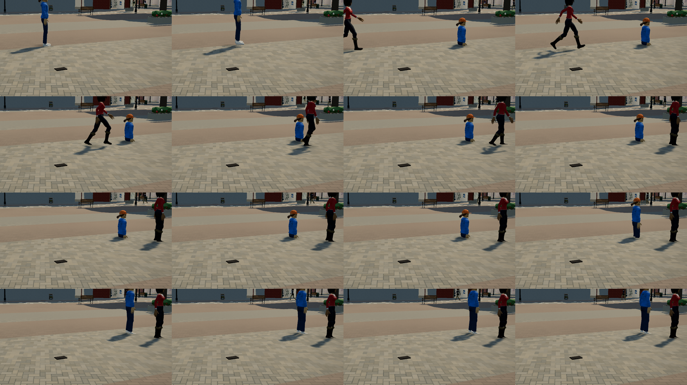
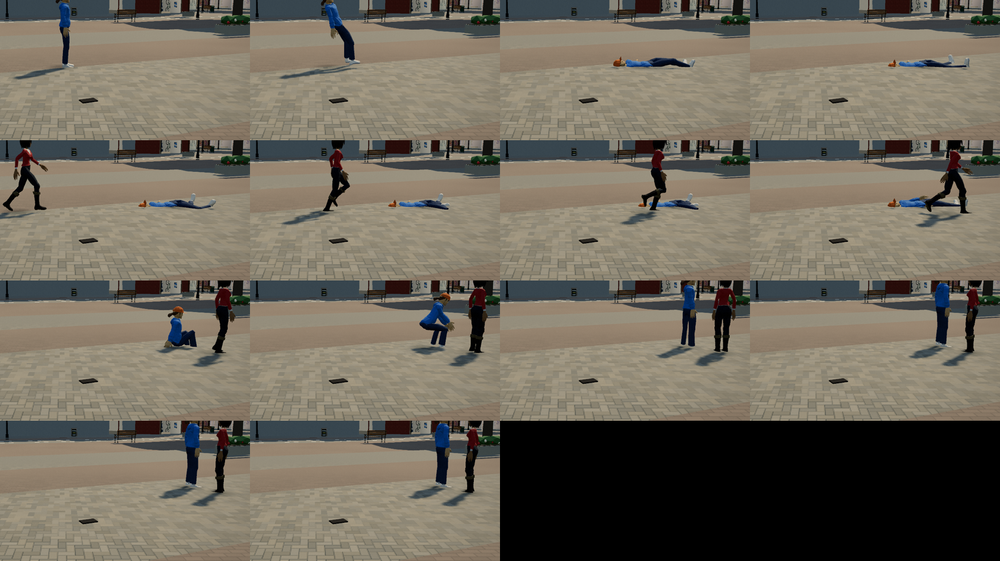
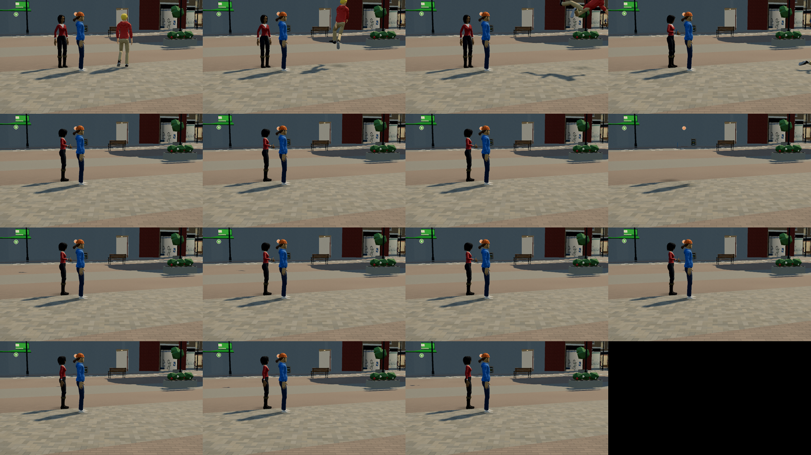
Voor: Tammo kort haar, LOD 0, 1, 2 met en zonder pet (paarsgewijs): het hoofd Casual2_Head heeft een staart in het pack.
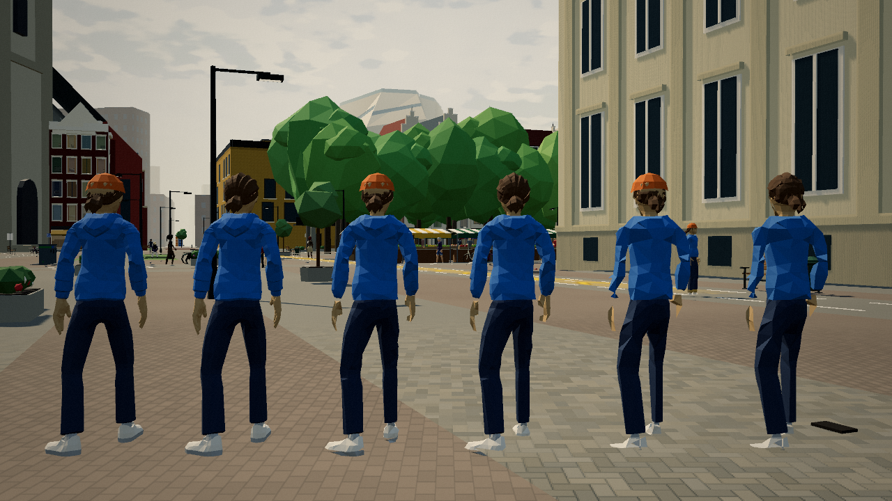
Na: zelfde, zonder staart.
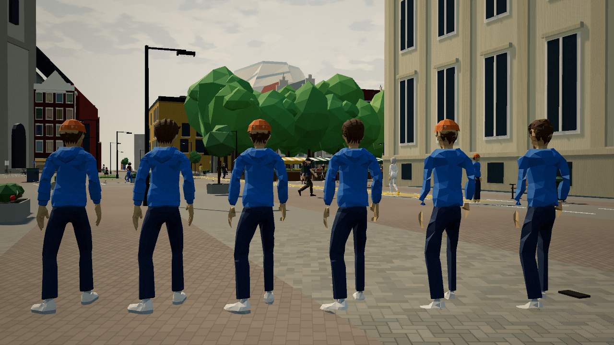
Tammo: kort, paardenstaart, vlecht, staartjes, knot (van achteren)
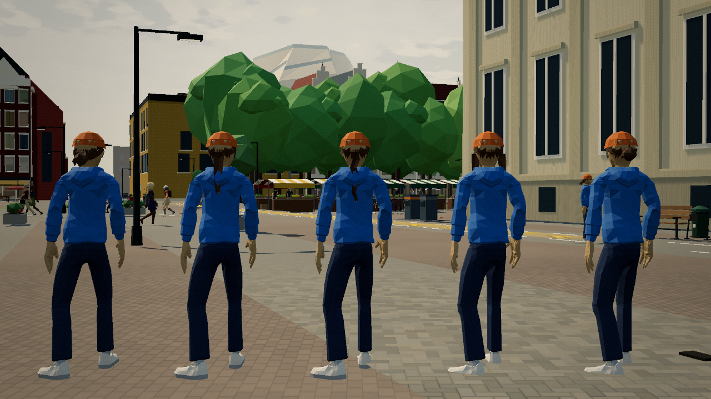
Tessa: dezelfde stijlen
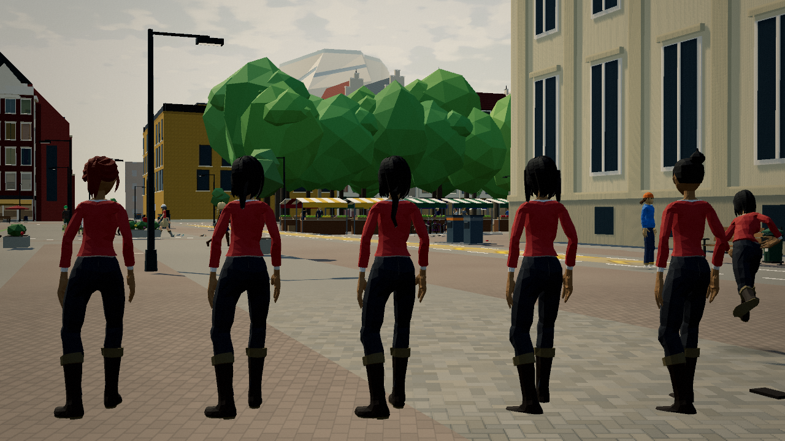
Voor (achter, 6x: LOD 0-2, zonder en met pet): schouderlengte.
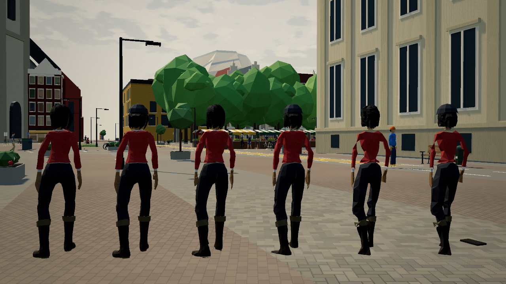
Na: achter
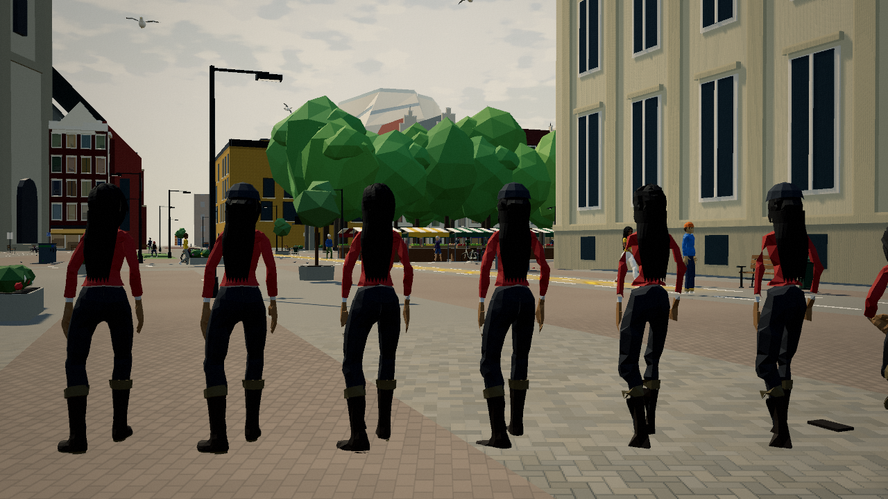
Na: voor
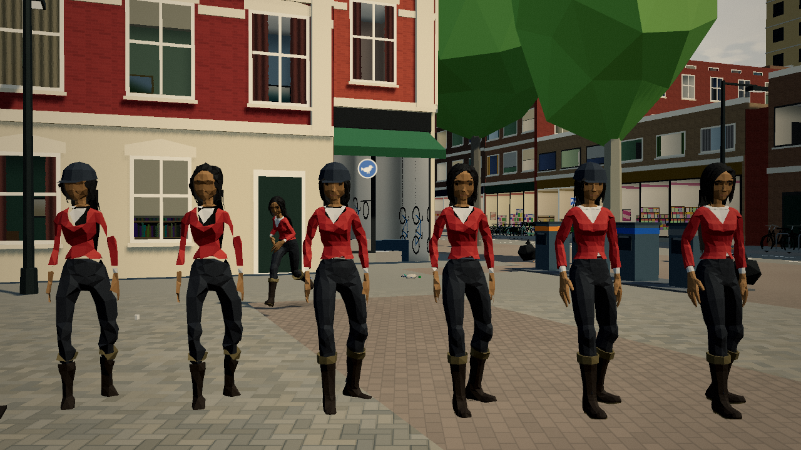
Na: opzij
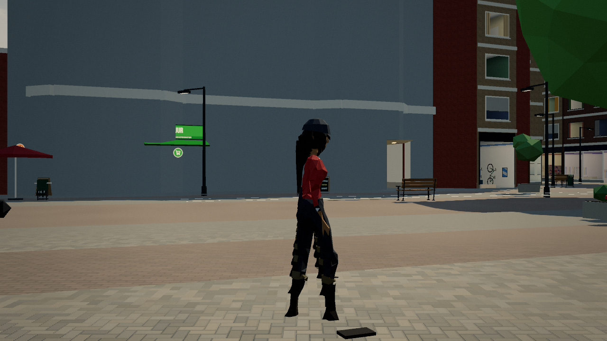